!!NIGERIA!!
These pictures represent diiferent areas that Nigeria is known for from football, to our food, our culture, our music, festivals, tourist areas and lots more. So while at looking at these pictures I would Love you to Envisage yourself having a feel of all these elements.

 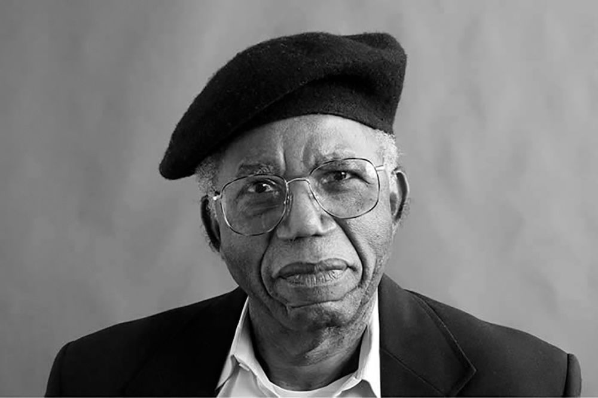
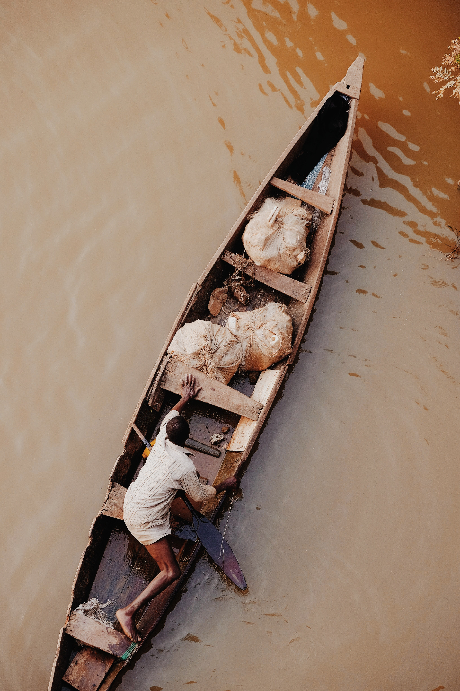
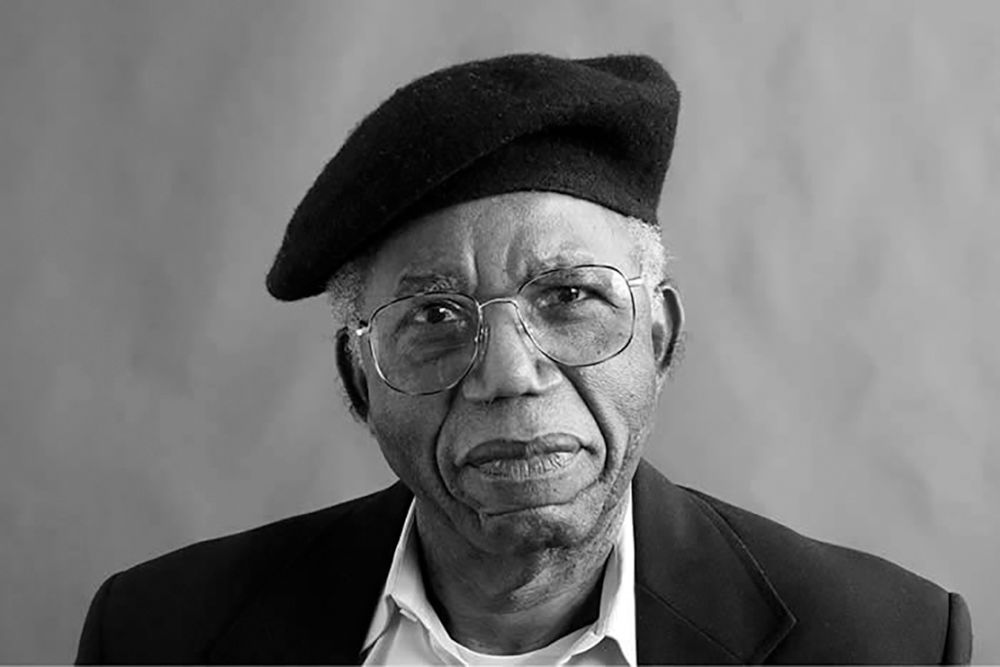
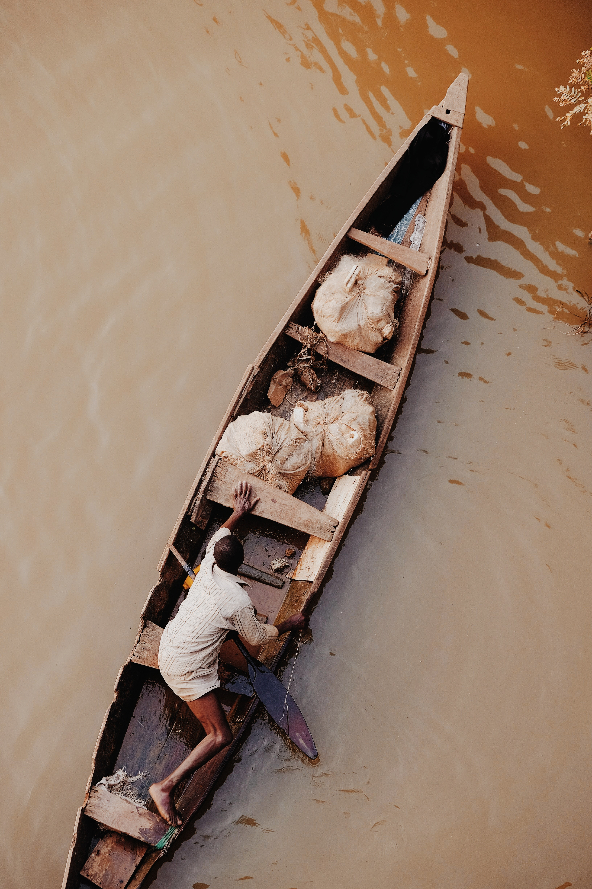
 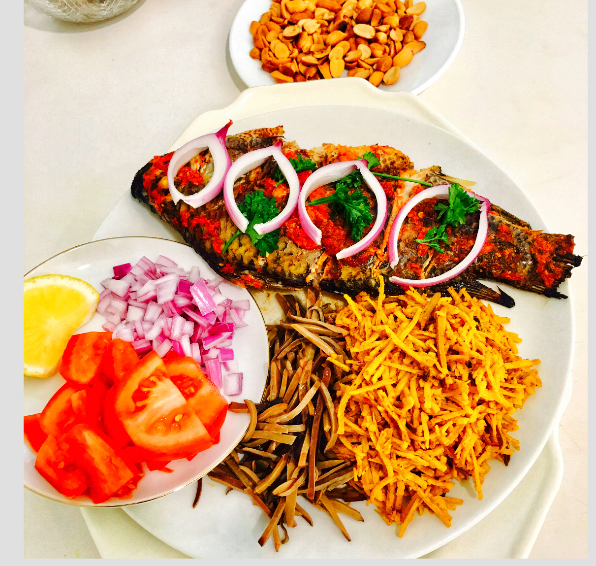
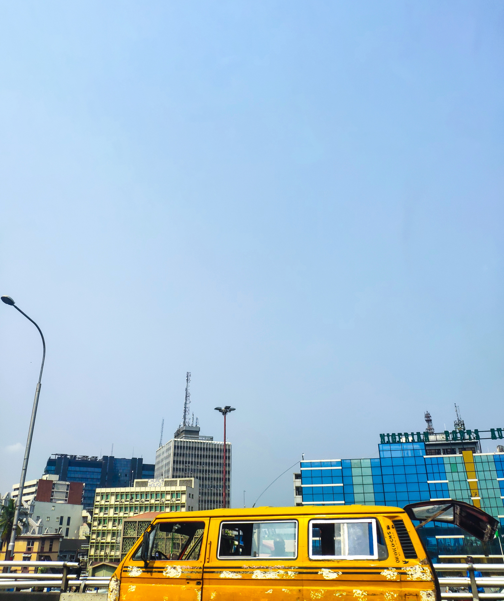
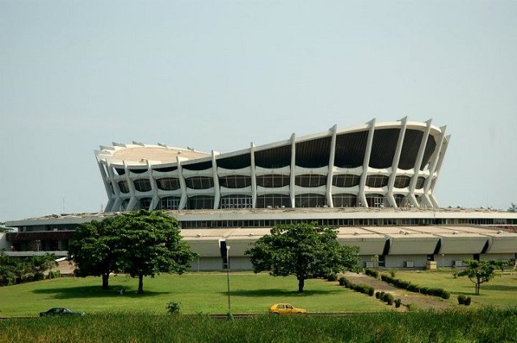
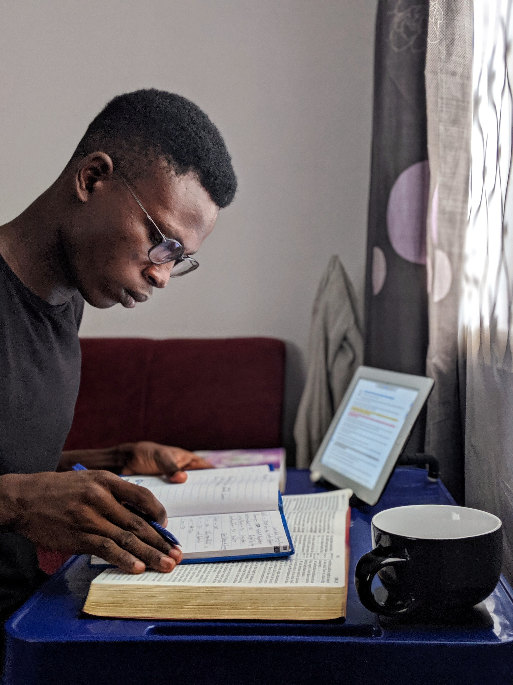
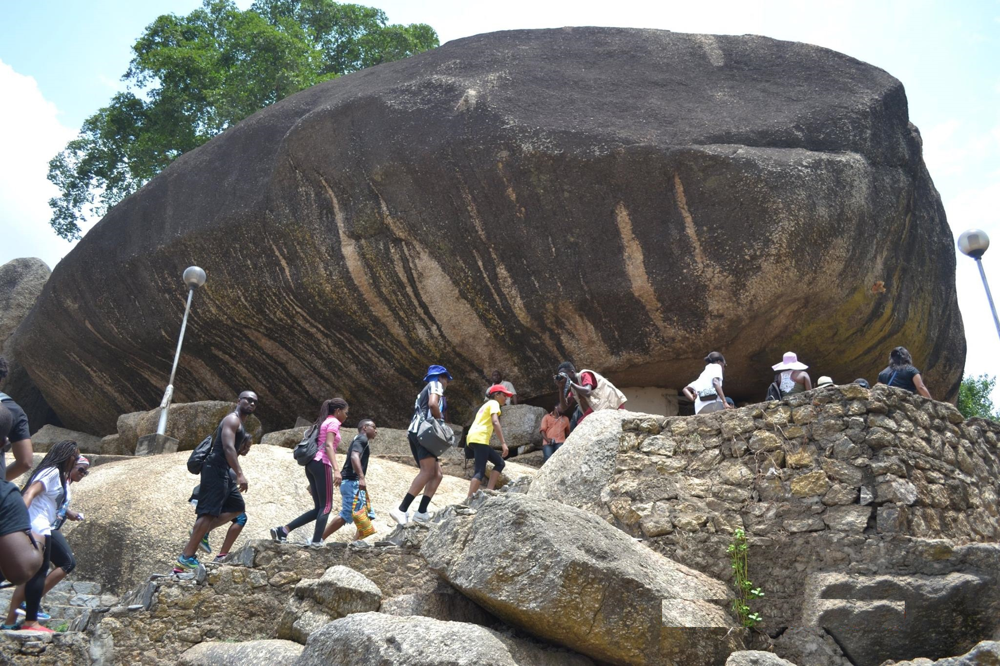
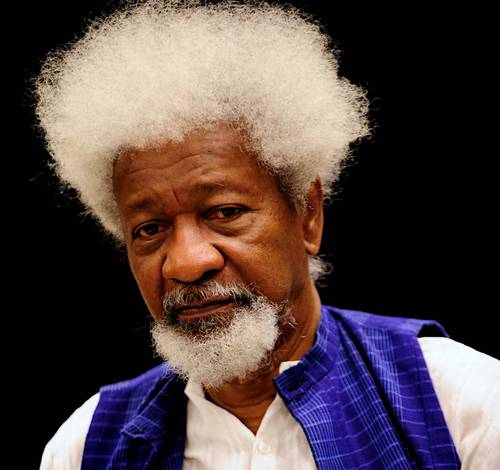
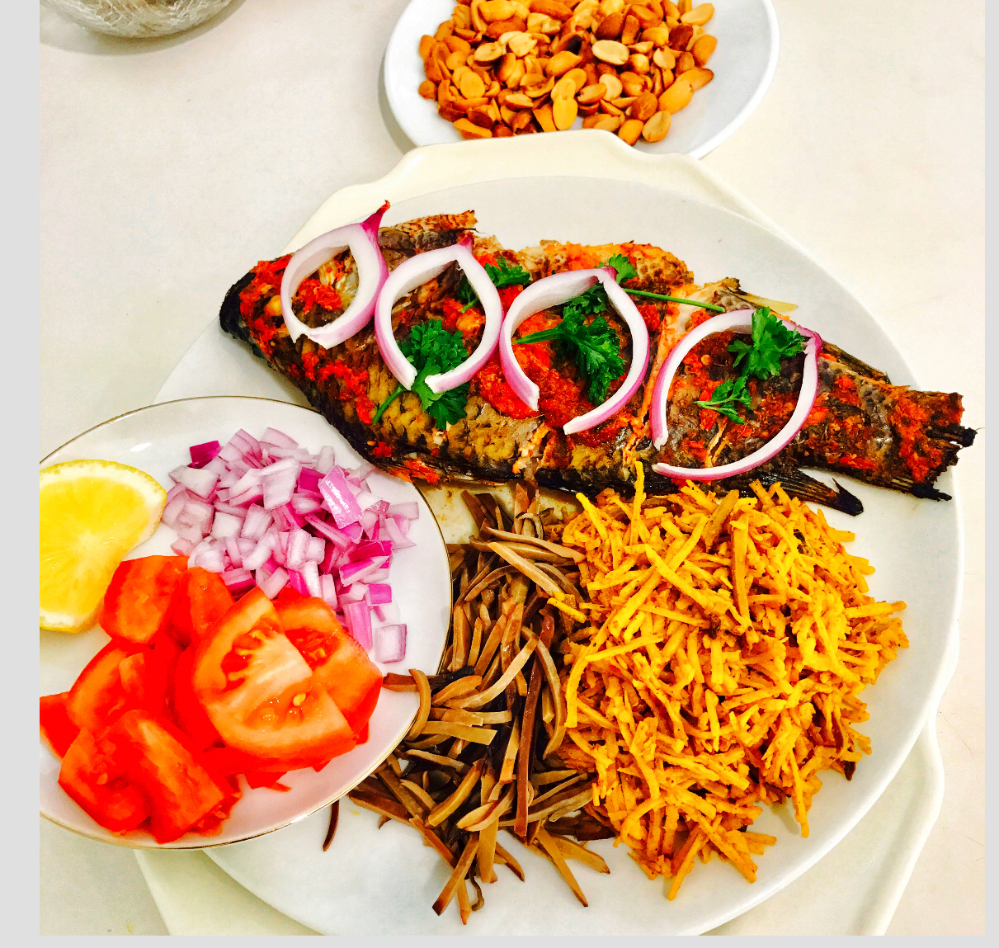
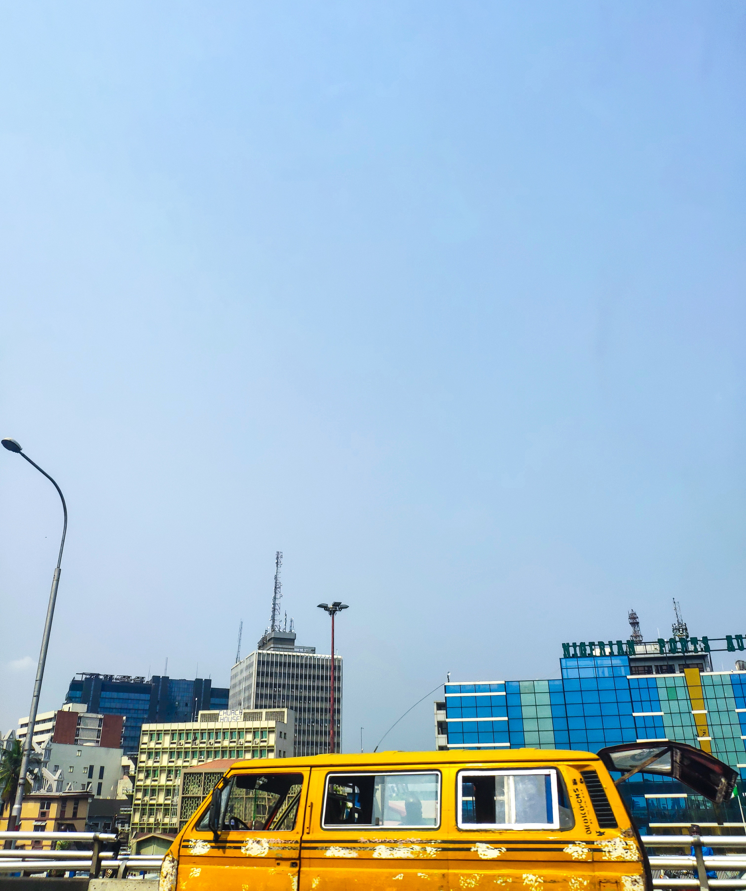
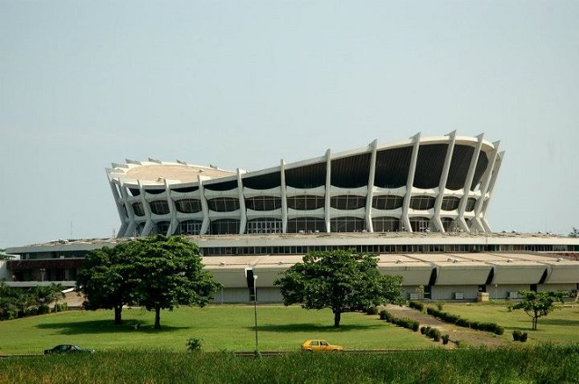
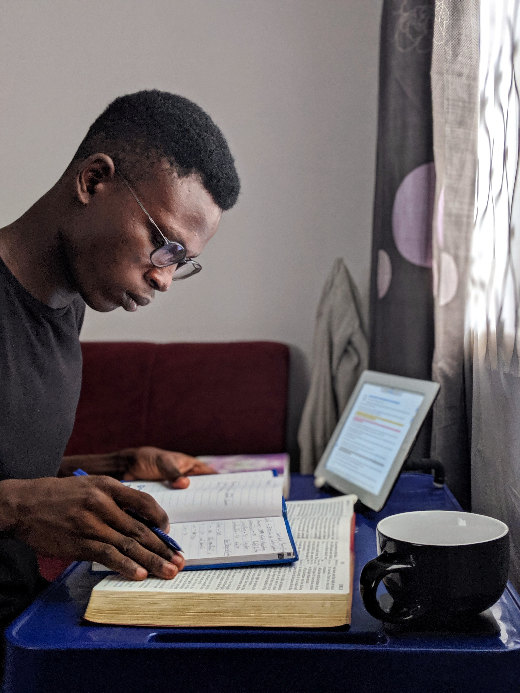
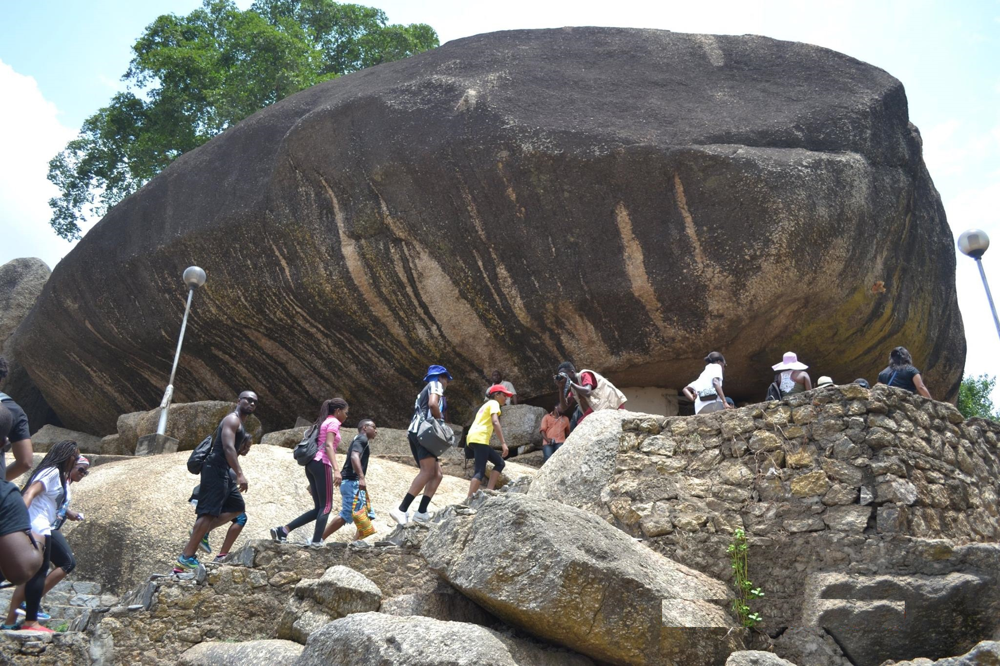
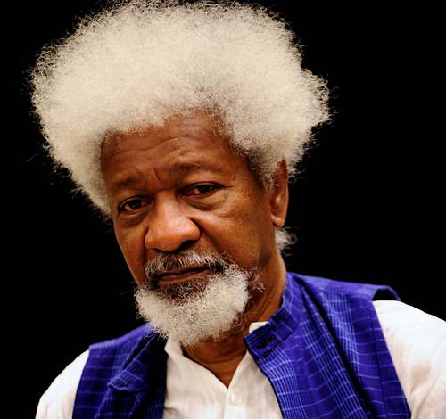
 Back to Home
Back to Home
https://wazobiaafricankitchen.com/wp-content/uploads/food34.jpg, https://www.carnivaland.net/wp-content/uploads/calabar-carnival.jpg,https://www.propertypro.ng/blog/wp-content/uploads/2018/03/Olumo-rock.jpg,https://www.theparisreview.org/il/e4b8f842fe/large/Chinua-Achebe.jpg,https://dailypost.ng/wp-content/uploads/2017/01/Wole-Soyinka-453.jpg,https://wazobiaafricankitchen.com/wp-content/uploads/food34.jpg,https://www.carnivaland.net/wp-content/uploads/calabar-carnival.jpg,https://connectnigeria.com/articles/wp-content/uploads/2013/08/National-Arts-Theatre-Lagos1.jpg,https://images.unsplash.com/photo-1540247110674-31e928ee852a?ixlib=rb-1.2.1&q=85&fm=jpg&crop=entropy&cs=srgb&dl=26everything-films-photos-eS_aZA5S42Y-unsplash.jpg,https://images.unsplash.com/flagged/photo-1559264243-77e7b0942b77?ixlib=rb-1.2.1&q=85&fm=jpg&crop=entropy&cs=srgb&dl=oladimeji-ajegbile-ZEjk5MY5hp4-unsplash.jpg,https://gfycat.com/gifs/search/nigeria+flag,google.com